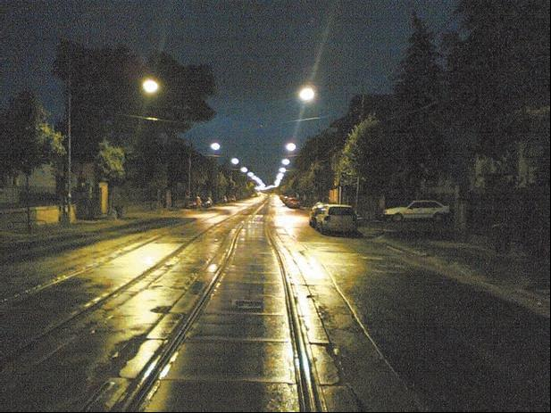
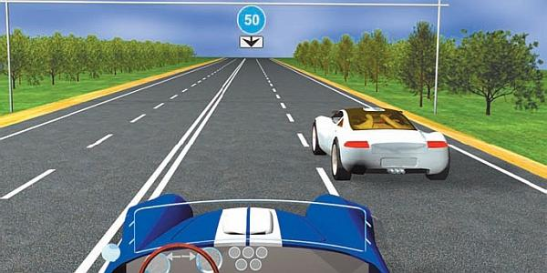
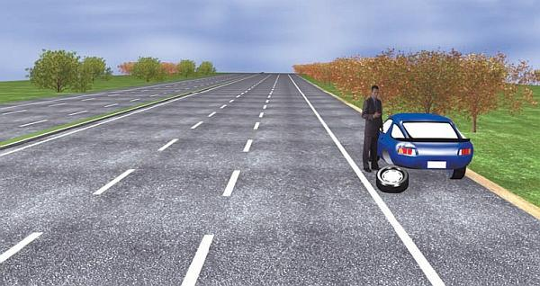

Управление автомобилем в темное время суток.
Управление автомобилем в темное время суток имеет целый ряд важнейших специфических особенностей, причем далеко не обо всех из них рассказывают в автошколах. Но в данном разделе мы расскажем о том, что выходит за рамки учебной программы.
ПРИМЕЧАНИЕ
Обратите внимание – речь пойдет не только о ночном вождении, но и о вождении в любое темное время суток (раннее утро, поздний вечер). В настоящее время используется следующее определение: темное время суток – это отрезок времени, который начинается от конца вечерних сумерек и заканчивается началом утренних сумерек.
В результате анализа данных о дорожно-транспортных происшествиях за продолжительный период времени был сделан неутешительный вывод: управлять автомобилем в темное время суток намного труднее, чем днем. Следовательно, ночная дорога значительно опаснее дневной, и к тому же гораздо более непредсказуема. Поэтому число пострадавших в ночных авариях в два раза больше, чем в авариях, случившихся днем.
Подготовка к ночной поездкеВНИМАНИЕ
В темное время суток каждый человек видит хуже, чем днем, – это неоднократно доказано. Кроме того, с годами зрение у людей имеет тенденцию к ухудшению, поэтому людям преклонного возраста без серьезной необходимости не рекомендуется садиться за руль в темное время суток.
Планируя отправиться в дорогу в темное время суток, следует тщательно подготовиться. Вначале необходимо проверить работоспособность внешних осветительных приборов: габаритных огней, «поворотников», фар, стоп-сигналов, фонарей заднего хода, противотуманных фар (при их наличии).
Подсветка приборного щитка должна функционировать обязательно – иначе вы будете лишены возможности контролировать скорость автомобиля, количество топлива в баке и температуру охлаждающей жидкости.
Позаботьтесь о том, чтобы «дворники» работали, как положено, их щетки не были потрепаны, а в бачке стеклоомывателя хватало жидкости. В холодное время не стоит заливать в этот бачок воду, так как она может замерзнуть, следовательно, стеклоомыватель функционировать не будет. Пользуйтесь специальными незамерзающими жидкостями.
Посмотрите в боковые зеркала заднего вида, если нужно – почистите их. Помните, что в темное время суток многие факторы, не имеющие особого значения днем, становятся очень важными. Например, плохо работают стеклоочистители – в светлое время суток это может не вызывать дискомфорта, а вот ночью не исключено, что вы просто не сможете нормально управлять машиной. То же самое можно сказать и о боковых зеркалах заднего вида: в светлое время суток еще можно (хотя и нежелательно) двигаться с грязными зеркалами, ночью же они просто ничем вам не помогут.
Если вы еще никогда не ездили ночью, внимательно изучите и запомните размещение в вашем автомобиле переключателей и рукояток, используемых для управления световыми приборами, иначе вы будете вынуждены заниматься их поиском во время движения, что очень опасно. Неприятной является ситуация, когда включить (выключить) какой-либо световой прибор нужно немедленно, а как раз это и не получается из-за незнания элементарных вещей.
Иногда водители испытывают затруднения с проверкой работоспособности задних осветительных приборов. На самом деле нет ничего сложного: во-первых, можно попросить о помощи – пусть человек станет позади машины и информирует о работе приборов, а вы, находясь за рулем, будете поочередно включать и выключать их; во-вторых (если такого человека найти не удалось), припаркуйте машину задом у любой стены или иного препятствия (в крайнем случае сгодится даже мусорный контейнер), по отблескам на нем вы быстро поймете, как работают задние осветительные приборы машины.
Особенности «ночного зрения»Более 90 % всех действий, предпринимаемых водителем, а также его выводов и решений основываются на информации, полученной с помощью зрения. Значит, надежность вождения сильно снижается в темноте, то есть водитель и видит хуже, чем днем, и зона его видимости не выходит за пределы света фар.
Именно поэтому большинство водительских ошибок, совершаемых в темное время суток, связано с неверными определением расстояния до препятствия (объекта), скорости своего автомобиля и оценкой скорости других.
В темное время суток водитель располагает меньшим временем для выбора и реализации решения, осуществления маневра, а также для исправления своей ошибки. Это приводит к тому, что водителю требуется намного больше времени, чтобы соответствующим образом отреагировать на изменение ситуации на дороге.
Верное средство улучшить видимость в темное время суток – уменьшить скорость. При прочих равных условиях по одной и той же дороге ночью двигайтесь намного медленнее, чем в светлое время суток.
Не разгоняйтесь быстрее, чем вам позволяет зона видимости в данных условиях. Помните, что в темное время суток вас могут подстерегать разные «неожиданности», например объекты, резко возникающие из темноты, которые днем вы бы отлично видели на большом расстоянии. Ночью на обнаружение подобных объектов вам нужно будет в два раза больше времени, чем в светлое время суток (рис. 5.8).

Рис. 5.8. Движение в ночное время требует повышенного внимания
Часто водители не надевают очки или контактные линзы, хотя ношение их им назначил врач-окулист. Так делать ни в коем случае нельзя даже днем, а уж тем более в темное время суток. Иначе вы не сможете вовремя обнаружить препятствие на проезжей части и, следовательно, отреагировать на его появление, что может стать причиной аварии. Не так страшно, если подобным препятствием будет булыжник, или неглубокая яма, или посторонний предмет. Намного хуже, если по причине плохого зрения вы собьете пешехода. Знайте, при небольшом расстройстве зрения никто не заставляет вас все время пользоваться очками или контактными линзами, но управлять автомобилем следует только в них.
Во время ночной езды помните, что на проезжей части и рядом с ней могут быть неосвещенные объекты. Поэтому при движении в темное время суток создавайте себе резерв безопасности. Если у вас сложилось впечатление, что перед вашим автомобилем есть пока еще плохо различимое препятствие, срочно уменьшайте скорость или вообще остановитесь. Даже если окажется, что впереди ничего нет, лучше лишний раз подстраховаться.
Большую опасность в темное время суток представляют собой пешеходы. Заметить пешехода днем даже на большом расстоянии нетрудно, ночью же зона вашей видимости ограничена светом фар. Находящийся у края проезжей части человек может быть вне поля вашего зрения, поэтому его внезапный выход на дорогу станет полной неожидан ностью.
Самое тщательное внимание следует обращать на детей, так как по причине небольшого роста они менее заметны, чем взрослые.
Не стоит также забывать, что дети непредсказуемы, поэтому дорожная ситуация может измениться в любой момент.
Массу неприятностей и себе, и другим могут доставлять пешеходы преклонного возраста, нередко считающие лишним посмотреть по сторонам и переходящие дорогу где попало, не обращая внимания ни на наличие на ней транспортных средств, ни на знаки дорожного движения. У большинства таких пешеходов серьезные проблемы с реакцией, и адекватно оценить обстановку на дороге они не могут.
Но самое нежелательное – это появление пешеходов, находящихся в состоянии опьянения (алкогольного, наркотического или токсикологического), которые способны вытворятьна проезжей части все что душе угодно, не думая ни о себе, ни о других.
Если рядом с дорогой находятся представители этих групп, нужно заблаговременно приготовиться к самому неблагоприятному продолжению: сбросить газ, несколько раз помигать фарами, посигналить. Необходимо заранее определить также возможное направление движения в случае опасности и приготовиться в любой момент быстро остановиться.
В темное время суток (как и в светлое) нужно следить за едущим впереди автомобилем, чтобы вовремя заметить, когда он начнет снижать скорость. Следует помнить, что ночью вас об этом могут информировать только его стоп-сигналы, загорающиеся даже при несильном нажатии на педаль тормоза.
СОВЕТ
В дальние ночные поездки лучше ехать с напарником, который умеет водить автомобиль и, разумеется, имеет водительские права: будет возможность вести машину и отдыхать по очереди.
Для компенсации ограниченной видимости в темное время суток водители транспортных средств должны вовремя включить габаритные огни, что позволит другим участникам дорожного движения своевременно заметить их автомобиль.
Еще раз напомним, что в темное время суток следует двигаться медленнее, нежели днем. У вас будет лучше видимость, больше времени для наблюдения за дорогой, обнаружения опасности и соответствующего реагирования при неожиданном изменении ситуации на дороге.
Перед любым изменением направления движения «поворотник» включайте заранее: так нужно поступать в светлое время суток, а ночью – тем более. Поскольку ночью обзор сильно ограничен, вы должны информировать водителей других транспортных средств, а также пешеходов о любом, даже несущественном, изменении направления движения вашей машины. И не забывайте, что у других водителей должно быть достаточно времени для реакции на ваши действия.
В темное время суток соблюдайте увеличенную дистанцию между вашим и едущим впереди автомобилем. Стремитесь обойтись без обгонов, а если это невозможно, то постарайтесь выполнить обгон с особой осторожностью.
Не расслабляйтесь за рулем. В темное время суток на проезжей части, как правило, меньше автомобилей, чем днем, что может несколько ослабить внимание. Несмотря на относительно небольшое количество автомобилей на ночной дороге, движение не становится более безопасным, чем в светлое время суток. Все время контролируйте скорость, так как опыта даже самого мастеровитого водителя мало для оценки скорости на глаз.
Умейте правильно выбирать скорость движенияКаждый водитель при движении в темное время суток должен уметь выбирать наиболее подходящую скорость. Даже если ПДД разрешают за пределами населенных пунктов ехать на легковой машине со скоростью 90 километров в час, это вовсе не говорит о том, что в темное время суток за городом именно так и нужно ехать. Вполне вероятно, что хватит и 50–60 километров в час (рис. 5.9).

Рис. 5.9. Соблюдение минимальной скорости не менее важно, чем максимальной
Всегда учитывайте, сколько рядов для движения в каждом направлении есть на дороге, по которой вы едете. При наличии только одного ряда в каждом направлении быстро ехать категорически не рекомендуется. При большем количестве полос (например, по две или три в каждом направлении) можно немного разогнаться (само собой, без лихачества).
Обращайте также внимание на тип и состояние дорожного покрытия. Не секрет, что по асфальту или по «бетонке» можно ехать намного быстрее, чем по грунтовой дороге (на дороге, посыпанной гравием, о высокой скорости нужно забыть в принципе). На дороге с твердым, но некачественным покрытием (есть ямы, выбоины) также не стоит развивать слишком большую скорость. Во-первых, при наезде на высокой скорости даже на небольшое препятствие машину может вынести в кювет или на полосу встречного движения, во-вторых, быстрая езда по ямам и ухабам – самый легкий способ повредить колеса или подвеску автомобиля.
Учитывайте также то, насколько хорошо вы знакомы с дорогой, по которой движетесь. Ведь ехать по хорошо известной дороге, на которой знакома каждая кочка, каждый поворот и каждый дорожный знак, – одно, а когда все вокруг незнакомо и водитель вынужден вглядываться во все, что только можно, – совсем другое.
Большое значение для выбора скоростного режима имеет также техническое состояние вашего автомобиля. Не злоупотребляйте скоростью, если, например, изношены шины, «текут» амортизаторы, плохо отрегулированы развал и схождение колес и т. д. Ведь в условиях плохой видимости вы можете вовремя не заметить опасности, а когда все же обнаружите ее, плохое техническое состояние машины не позволит выполнить нужный маневр и избежать тем самым аварии.
Еще один важнейший фактор, который необходимо учитывать, – это погода «за бортом». Во время дождя, снега или тумана скорость должна быть минимальной. Известно, что в свете фар идущий снег или сильный дождь выглядит сплошной стеной, ограничивая обзор перед транспортным средством лишь двумя-тремя метрами. Доказано, что если в такой ситуации перед машиной появится какое-либо препятствие, то при скорости более 10 километров в час человеческой реакции недостаточно для предотвращения аварии.
При выборе скоростного режима необходимо также учитывать текущую дорожную обстановку. Очевидно, что при большом количестве встречных и попутных машин ехать нужно медленнее, чем при путешествии в одиночку.
Пользуйтесь дальним светом фар – это заметно увеличивает зону видимости. Разумеется, включать дальний свет можно только при отсутствии встречных машин, а также если перед вами никто не едет (иначе можно ослепить водителя едущей впереди машины через его зеркало заднего вида). Своевременно переходите на ближний свет фар, чтобы не ослеплять водителей других транспортных средств. При встречном разъезде всегда замедляйте движение, так как даже ближний свет фар встречного транспортного средства заметно сократит зону вашей видимости.
Ночной обгон: как не попасть в ДТПВ темное время суток нежелательно без серьезных причин осуществлять такой опасный маневр, как обгон. При отсутствии другого выхода дополнительно позаботьтесь не только о своей безопасности, но и безопасности других участников движения. Ночной обгон намного труднее и опаснее, чем дневной.
Перед началом маневра переключите дальний свет фар на ближний. После этого удостоверьтесь, что в данном месте обгон не запрещен. Заблаговременно включите сигнал левого поворота (ночью это особенно актуально) и, удостоверившись в безопасности маневра, приступайте к его выполнению.
СОВЕТ
Планируя выполнить ночной обгон, заранее информируйте об этом водителя обгоняемого транспортного средства кратким переключением ближнего света фар на дальний и опять на ближний.
Выехав на встречную полосу, интенсивно ускоряйтесь, чтобы выполнить маневр в максимально короткий срок, двигайтесь по встречной полосе до того момента, пока в зеркале заднего вида не отобразится обгоняемый автомобиль. При неожиданно возникшей опасности (например, встречный автомобиль) замедлите движение, пропустите вперед обгоняемый автомобиль и возвращайтесь в свой ряд. Но если маневр практически завершен, целесообразнее добавить газ, чтобы быстрее полностью обогнать автомобиль и возвратиться на свою полосу движения. Однако в данном случае необходимо убедиться в том, что имеющееся расстояние до встречного автомобиля позволяет вам так поступить.
Когда вы поравняетесь с обгоняемым автомобилем, можно включить дальний свет фар, так как теперь через зеркало заднего вида вы не ослепите водителя этого автомобиля. В то же время для вас это будет как нельзя кстати, поскольку тем самым значительно увеличится зона видимости.
Перед возвращением на свою полосу движения не забудьте включить сигнал правого поворота.
Если вас ослепил встречный автомобиль…Если у встречной машины при приближении к вам дальний свет не переключился на ближний, моргните водителю фарами (возможно, он просто забыл переключиться). Но даже если это не подействовало, ни при каких обстоятельствах не пытайтесь отплатить ему той же монетой: это может стать причиной серьезной аварии! Ведь в результате ослепления водитель встречной машины может потерять ориентацию, утратить контроль и выехать на встречную полосу.
Поэтому, если водитель встречного автомобиля слепит вас дальним светом фар – уменьшите скорость или остановите автомобиль. Желательно при этом включить аварийную световую сигнализацию (причем еще во время движения), чтобы проинформировать других участников движения о возможной опасности (рис. 5.10).

Рис. 5.10. Водитель не прав: при вынужденной остановке на трассе нужно включать «аварийку» и выставлять знак аварийной остановки
Если вы пришли к выводу, что можно не останавливаться, держитесь как можно правее и продолжайте движение на малой скорости с ближним светом фар.
Категорически запрещается смотреть на фары встречной машины! Смотрите правее, но при этом не переставайте контролировать дорожную обстановку, ориентируясь по правому краю проезжей части. Ехать на минимальной скорости нужно до полного восстановления видимости.
Нередко случается, что водителя слепит не встречное, а движущееся сзади транспортное средство (через салонное зеркало заднего вида). В этом случае рекомендуется временно отвернуть зеркало от себя. Можно также избавиться от ослепления сзади, позволив движущемуся за вами автомобилю обогнать вашу машину.
Если отказали световые приборыОчень опасно, когда при движении в темное время суток у машины неожиданно перестают работать световые приборы, так как из-за этого автомобиль становится полностью невидимым для всех, кто находится на дороге и в непосредственной близости от нее. И если у водителей других машин имеется шанс увидеть вас в свете своих фар, то у пешехода такой возможности нет и он может выйти на дорогу прямо перед автомобилем.
ПРИМЕЧАНИЕ
В большинстве случаев световые приборы выходят из строя из-за сгоревшего предохранителя. Эту поломку может устранить даже новичок, но при условии, что в бардачке имеется запасной комплект предохранителей.
В этом случае не теряйте самообладания и попытайтесь выяснить, функционируют ли в вашей машине хоть какие-нибудь световые приборы, включите их, чтобы обозначить машину (например, с помощью аварийной световой сигнализации), и остановитесь. Все это нужно сделать максимально быстро.